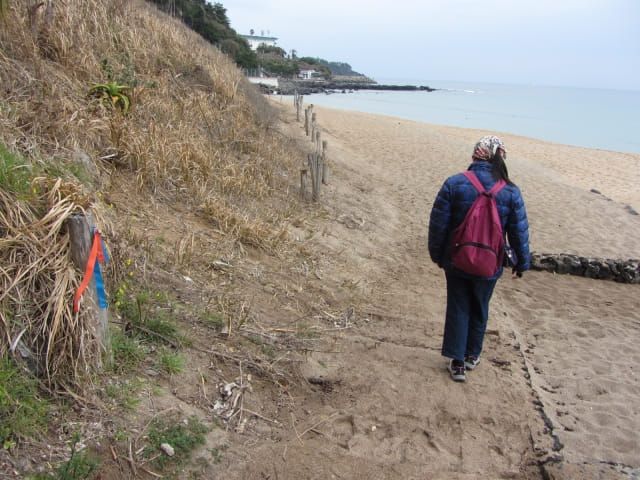
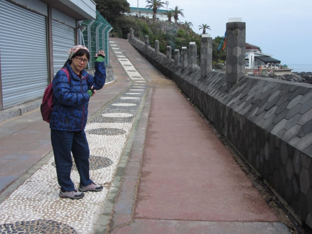

在濟州凱悅酒店後面的海濱公園欣賞無盡大海壯麗景色, 稍作休息後, 繼續沿偶來8號小路走。山坡下左邊的長長金黃沙灘便是中文海灘, 接著我們會穿過沙灘, 到達另一邊的濟州太平洋樂園 (퍼시픽랜드)。

沿公園旁的步道往下一直走。穿過叢林, 迎面是金黃色的中文沙灘。
中文海灘長560米、寬50米, 又稱為長沙沙灘, 沙灘上的沙子很細很軟, 有黑、白、紅、灰四種顏色的沙子
沿沙灘慢慢走。
面對無盡大海, 不時停下來欣賞。

走累了, 可往沙灘旁步道中的涼亭休息一會, 然後繼續行程。其實這路線頗為悠閒的, 如果遇上好的天氣, 藍天碧海, 感覺肯定更佳。

繼續往前走。

濟州太平洋樂園 (퍼시픽랜드)
穿過沙幼的中文海灘, 便來到濟州太平洋樂園, 中文觀光園區內的一個大型設施。
沿陡坡繼續往前走。

濟州太平洋樂園海岸旁的餐廳。在韓國, 幾乎所有旅遊區的海邊都有餐廳。
往上走一會便來到山坡上的濟州太平洋樂園。既然來到, 當然四處逛逛啦! 她說, 這裡很像日本的沖繩島。

很有熱帶風情的濟州太平洋樂園。
這古怪石頭像什麼?